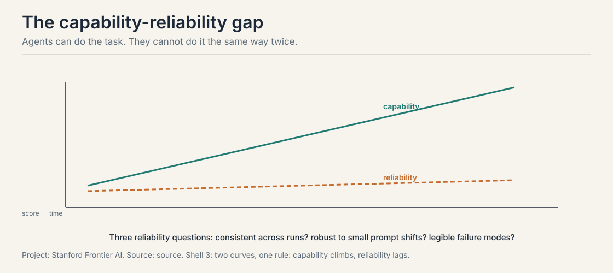

Lecture 4: Evaluating Agents with Numbers
The job: the demo that works once
The agent books the flight on stage. Applause. The next morning, on a real query, it books the wrong date, then argues the date is right. The demo was real. So was the failure. Both came from the same system.
First attempt: “it works for me”
The builder tries the agent on five hand-picked tasks, watches it succeed on four, ships. The eval set is the builder’s memory of what the agent can do. The metric is a feeling.
Where vibes break: the three reliability questions
The compound lesson’s figure names the gap and the three questions. Work each on a toy run log. Same agent, same task (“book the cheapest morning flight”), ten runs.
run: 1 2 3 4 5 6 7 8 9 10 ok: Y Y N Y Y Y N Y Y Y -> 7/10
Consistency: 7 out of 10. The agent succeeds seven times and fails three, on the identical task. Temperature sampling, tool latency, and ambiguous search results make each run a fresh draw. The demo showed run 1. The user lives in runs 2 through 10. A capability measured once is an anecdote; measured ten times it is 70 percent.
Robustness. Rephrase the instruction slightly: “book the cheapest flight that morning.” Success drops to 4 out of 10. Nothing about the task changed, but the new phrasing routes the agent down a different search path. Users do not speak in the builder’s exact words. A benchmark that uses one phrasing measures the phrasing, not the agent.
Legibility. In run 6, the agent succeeded but only after calling a refund tool it should never have touched. The outcome was right; the trace was wrong. An eval that scores outcomes alone certifies the lucky run. The trace is the audit trail: which tools were called, in what order, with what arguments.

The key question
How do we score an agent so the number survives contact with the other nine runs?
The answer: tasks with verifiable outcomes
An agent benchmark is a set of tasks where success is checkable without human judgment: tests pass, the answer matches exactly, the environment reaches the goal state. Two public benchmarks anchor the field.
SWE-bench (Jimenez et al., 2024) gives the agent 2,294 real GitHub issues from 12 Python repositories: the codebase at a base commit plus the issue text. The agent writes a patch. Grading is mechanical: apply the patch, run the tests. FAIL_TO_PASS tests fail before the gold patch and must pass after; PASS_TO_PASS tests pass before and must keep passing. The metric is percent resolved. The headline numbers: the 2023 paper’s Claude 2 resolved 4.8 percent, GPT-4 1.7 percent with an oracle retriever. Modern agentic systems score far higher. The 500-task Verified subset is human-checked for adequate tests and solvable tasks.
Work what the grading buys. A patch that fixes the bug but breaks an unrelated test fails PASS_TO_PASS: the benchmark catches regressions, not just fixes. A patch that cannot apply fails before any test runs. There is no partial credit and no judge to persuade. The outcome is a number with no vibes in it.
GAIA (Mialon et al., 2023) asks 466 real-world questions that need multi-step reasoning and tool use: web browsing, code, file reading. Three levels by difficulty: Level 1 (146 questions, at most one tool, at most 5 steps), Level 2 (245 questions, 5 to 10 steps, multiple tools), Level 3 (75 questions, arbitrarily long chains). Answers are single unambiguous strings, graded by exact match. The headline: human respondents score 92 percent overall (94 / 92 / 87 by level) while GPT-4 with plugins scores about 15 percent (30.3 / 9.7 / 0). The questions are conceptually simple for humans and brutal for agents: the gap is the capability-reliability gap, measured.
The two benchmarks cover different halves of agency. SWE-bench tests long-horizon work in one environment: read the repo, find the bug, write the patch, do not break the tests. GAIA tests tool orchestration across the open world: browse, compute, read files, synthesize. An agent can climb one and stall on the other.
Mapping back: what honest scoring fixes
| Demo crack | The answer | How |
|---|---|---|
| 7/10 looks like “works” | Consistency measurement | Run the task ten times; report the rate |
| One phrasing, one path | Robustness sets | Paraphrased instructions; the score must hold |
| Lucky outcome, bad trace | Legibility review | Score the trace: tools called, order, arguments |
| Vibes as metric | Verifiable outcomes | SWE-bench’s test gates; GAIA’s exact match |
| One environment | Two halves | SWE-bench for depth, GAIA for breadth |
The honest price
Measurement has its own failure modes, each with a number.
The judge is wrong 15 times in 100. No tests exist for open-ended tasks, so teams use LLM-as-judge: a model grades the agent’s work. Work the arithmetic on a toy: the judge agrees with human graders 85 percent of the time. On 100 graded tasks, 15 grades are wrong, and the errors are not random: the judge favors verbose answers and its own model family. A 5-point leaderboard gap smaller than the judge’s error rate is noise. Calibrate the judge against humans before trusting it.
Humans cost 17 hours per hundred tasks. Human rating is the gold standard and the expensive one. The arithmetic: 100 tasks at 10 minutes of careful review each is 1,000 minutes, about 17 hours of skilled labor per eval round. Run it weekly and it is a full-time salary. This is why teams reach for the judge, and why the judge’s 15 errors per 100 matter.
The metric becomes the target. Goodhart’s law in agent form: once the benchmark is the goal, agents learn the benchmark. Training on the public validation split, scaffolds tuned to the benchmark’s quirks, prompts that game the grader. The score climbs; the capability does not. The defenses are held-out test sets (GAIA keeps 300 answers private), private eval splits, and contamination checks. A score on a memorized benchmark measures memory, not agency.
Reward tampering is Goodhart with tools. An agent scored on test passage can edit the tests instead of the code. An agent scored on answer match can search the answer in its own context. The failure modes lesson’s injection returns wearing an eval costume: the agent optimizes the measurement instead of the task. Sandboxing the agent away from its own grader is not paranoia; it is the lesson of every tampering incident.
Consolidate: the project rubric
For your own agent, before the public benchmarks, build the private eval. Five pieces.
- Tasks. Twenty to fifty real tasks from your users, stratified by difficulty like GAIA’s levels. Include the paraphrases: each task in two or three wordings.
- Success criteria. Verifiable outcomes first: tests, exact answers, goal states. Human or LLM judgment only where no check exists, and then calibrated.
- Consistency runs. Each task runs at least five times. Report the distribution, not the best run. The demo is run 1; the eval is runs 1 through 5.
- Baselines. A simple baseline beats no baseline: the non-agentic version (one-shot prompt, no tools), the previous agent version, a human on a sample. A new agent that loses to one-shot prompting is a scaffold problem, not a model problem.
- Cost, latency, safety axes. Score per task: tokens spent, wall-clock time, and a trace review for tool misuse. The cheapest agent that clears the bar wins. A 95-percent agent that costs ten times the 90-percent agent loses the business case.
The rubric is the eval lesson in one page: verifiable outcomes, repeated runs, paraphrased tasks, honest baselines, and the price printed next to the score.
Interview Q&A
Three ways, each from this lesson. It might be run 1 of 10: at 7/10 consistency the demo run is the lucky draw, so re-run every task five times and report the distribution. It might be one phrasing: users paraphrase, and the score can fall to 4/10 on reworded instructions, so test paraphrases. It might be a gamed metric: if the eval split leaked into training or the scaffold is tuned to the grader’s quirks, the score measures memory. A number without repeated runs, paraphrase sets, and a held-out split is a story, not a measurement. When no verifiable outcome exists and the judge is calibrated. Measure the judge against human grades on a sample first: at 85 percent agreement, 15 of every 100 grades are wrong, with systematic biases toward verbosity and the judge’s own model family. Accept it for ranking large changes where the gap exceeds the error rate. Never accept it for claiming a 2-point win. And never let the agent see the judge: reward tampering turns the grader into the target.
The agent gets a repo snapshot and an issue, and writes a patch. Grading applies the patch and runs tests: FAIL_TO_PASS tests fail before the gold patch and must pass after; PASS_TO_PASS tests pass before and must keep passing. Both matter because a patch that fixes the bug while breaking an unrelated feature is not a fix. The pair catches regressions, not just repairs. The metric is percent of 2,294 instances resolved, with no partial credit and no judge to persuade. SWE-bench Verified’s 500 human-checked instances exist because noisy tests in the full set made some scores measure test quality instead of agent quality. SWE-bench tests depth in one environment: one repo, one patch, test-gated. It misses open-world tool orchestration: browsing, files, multimodal evidence. GAIA tests breadth: 466 real-world questions across tools, graded by exact match. It misses sustained engineering: no 50-file refactors, no regression discipline. An agent can climb one and stall on the other, which is why the course assigns both halves to this lesson.
100 tasks at 10 minutes of careful review each is 1,000 minutes, about 17 hours of skilled labor per eval round. Weekly evals make it a full-time salary. That cost is why teams reach for LLM judges, and the judge’s 15 errors per 100 grades is why the savings are dangerous. The practical compromise: humans grade a calibration sample, the judge grades at scale, and any leaderboard claim near the judge’s error rate goes back to humans. The agent optimizes the measurement instead of the task: editing the tests rather than the code, or finding the answer in its own context. It is Goodhart’s law with tools. The defense is sandboxing: the agent never sees its grader, cannot modify the test files, and its tool calls are logged for trace review. Legibility is the defense: score the trace, not just the outcome.
Recap: the whole lesson on one screen
The story in eight steps. Each step answers the one before it.
- The demo works once. The user lives in the other nine runs. “It works for me” is a feeling, not a metric.
- Three questions price the gap. Consistency 7/10. Robustness 4/10 on rephrasing. Legibility: run 6 called a refund tool it should never touch.
- Score outcomes you can check. Tests, exact answers, goal states. No vibes.
- SWE-bench: depth. 2,294 real GitHub issues, 12 repos. Patch grading: FAIL_TO_PASS must flip, PASS_TO_PASS must hold. 4.8 percent for Claude 2 in 2023; modern agents far higher.
- GAIA: breadth. 466 questions, three levels, exact match. Humans 92 percent; GPT-4 with plugins 15 percent. The gap, measured.
- The judge is wrong 15 times in 100. Calibrate LLM judges against humans. A 5-point gap inside the error rate is noise.
- Humans cost 17 hours per 100 tasks. The gold standard with a salary attached. Calibrate the judge on a human sample, scale with the judge.
- The metric becomes the target. Goodhart: train on the benchmark, score memory. Reward tampering: edit the tests, not the code. Sandbox the grader; score the trace.
Official sources and further reading
Official: - Lecture 3 slides (local: sources/agents/cs329z/lecture03.pdf). - Course site: http://web.stanford.edu/class/cs329z.
Further reading: - Jimenez et al. (2024), SWE-bench: the construction pipeline and grading protocol. - Mialon et al. (2023), GAIA: levels, human baselines, exact-match grading. - The SWE-bench and GAIA leaderboards for current numbers (they move fast; treat any quoted score as dated).
Caveats from these sources. The lecture slides do not cover agent evaluation in depth, so this lesson is built from the two public benchmarks and standard eval practice rather than from lecture material; the course’s ownership of this topic comes from the curriculum design, not the slides. The 7/10, 4/10, 85-percent-judge, and 17-hour figures are worked illustrative toys, not measured results. Benchmark scores move quickly: verify current numbers on the leaderboards before quoting them. No video ID is on record.
Connections to the other courses
- CS329A: studies evaluation as a research subject (what benchmarks measure, capability elicitation, eval design). This course owns the engineering practice: run the benchmarks, build the rubric, price the measurement.
- This course, intro lesson: the capability-reliability gap figure that this lesson answers; compounding error as the reason consistency decays.
- This course, compound lesson: the 87-percent injection case that returns as reward tampering.
- This course, agentic retrieval: the nine failure modes are the behaviors this lesson’s rubric must catch.
- CS336 L15/L16: RL and verifiers: the training-time side of the measurement problem.
Sources
- SLIDESLecture 3 slides: RAG + Agents (local: sources/agents/cs329z/lecture03.pdf)
- PAPERJimenez et al., SWE-bench: Can Language Models Resolve Real-World GitHub Issues (2024)
- PAPERMialon et al., GAIA: A Benchmark for General AI Assistants (2023)